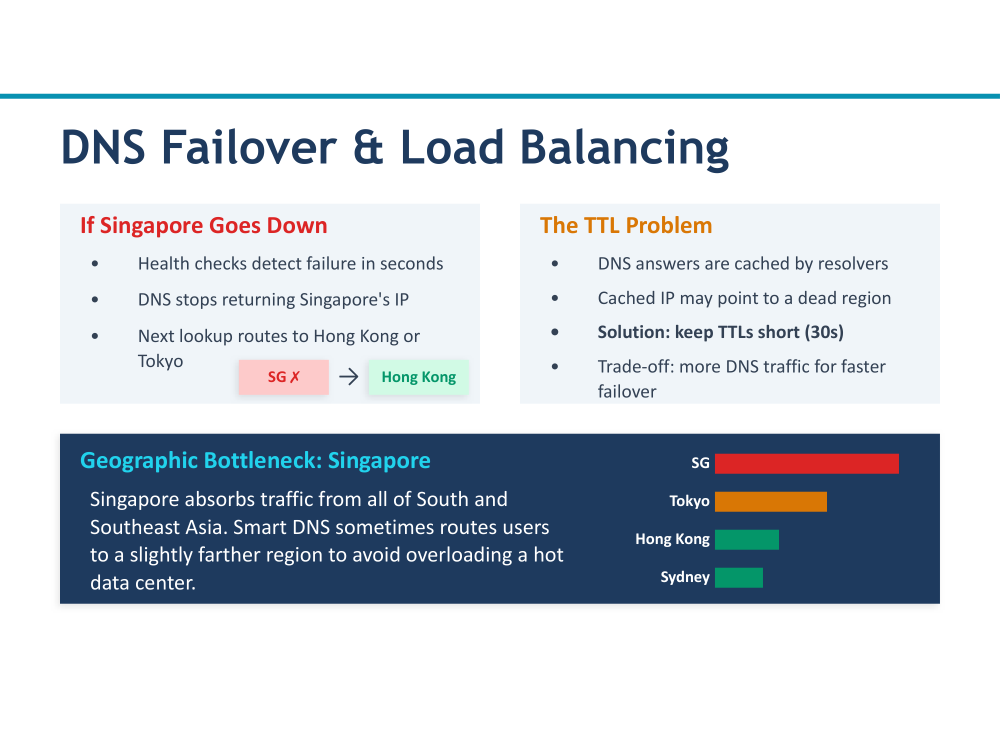
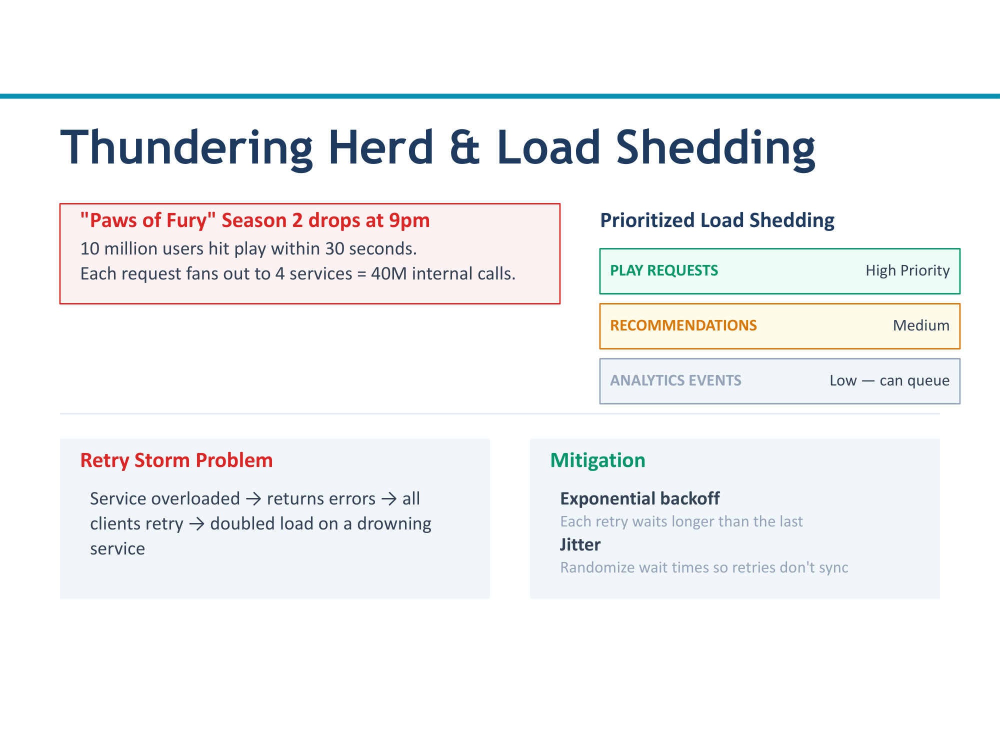
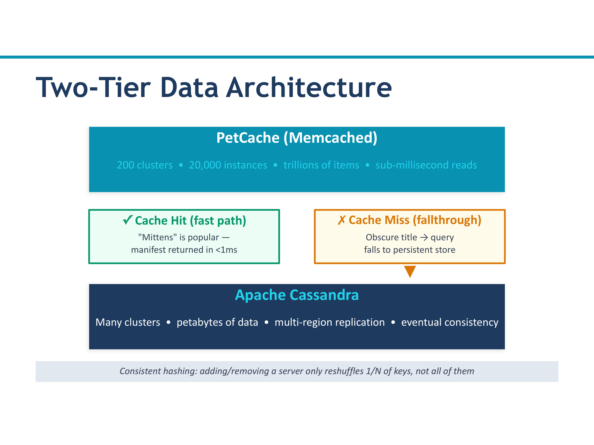

How Petflix Streams a Cat Video — Part 1
A tour through the distributed systems stack, from DNS to caching
Introduction: The Petflix Architecture
Imagine you open your laptop, navigate to petflix.com, and click play on a video of a cat knocking a glass off a table. It starts instantly. The whole thing feels effortless. But behind the scenes, a staggering amount of infrastructure just sprang into action — DNS servers, API gateways, dozens of microservices, caching layers, databases, content delivery networks, container orchestrators, and thread schedulers all coordinated to deliver those frames to your screen.
Petflix is our fictional Netflix-like service for cat videos. We will use it as a running case study to walk through the entire distributed systems stack, layer by layer. The goal is not to memorize every detail, but to build a mental model of what happens at each level and why each layer exists.
The 8-Layer Stack
We organize the infrastructure into an 8-layer stack. Each layer solves a different distributed systems challenge. As a request travels down the stack, it moves from the wide, global scale (which data center should handle this?) down to the narrow, local scale (which CPU core runs this thread?).
- DNS Routing — directs users to the nearest data center
- API Gateway & Circuit Breaker — authenticates requests, prevents cascading failures
- Microservices Fan-Out — splits one request into many parallel service calls
- Data & Caching — fast reads through caches, durable writes to databases
- CDN (Content Delivery Network) — serves static content from edge locations
- Pods, Leader Election & Replication — coordinates replicas for fault tolerance
- VMs, Containers & Orchestrators — packages and schedules workloads
- Cores & Threads — the lowest level of parallelism on a single machine

Layer 1 — DNS Routing
Everything starts when you type petflix.com into your browser. Before any application
code runs, before any microservice is contacted, the very first thing that happens is a
DNS lookup — your browser asks the Domain Name System to translate the human-readable
name "petflix.com" into a numerical IP address it can connect to.
But at the scale of Petflix, DNS does not simply return one fixed IP address. It does something much more sophisticated.
Geo-Routing
This matters enormously for latency. The speed of light in fiber optic cable is roughly 200,000 km/s, which means a round trip from New York to a data center in Singapore adds about 150 milliseconds of pure network delay. By routing users to the closest region, Petflix shaves off that latency before any computation even begins.
Health-Check Failover
What happens if the US-East data center goes down — maybe a power outage, maybe a network partition? The DNS system runs continuous health checks against every region. If a region stops responding, DNS automatically reroutes traffic to the next-closest healthy region. Users in New York might briefly get sent to US-West instead. They will notice slightly higher latency, but the service stays available.
Weighted Load Balancing
Not all data centers are created equal. US-East might have twice the capacity of AP-South. DNS can use weighted load balancing to distribute traffic proportionally — perhaps 40% to US-East, 30% to US-West, 20% to EU-West, and 10% to AP-South. This prevents any single region from being overwhelmed while others sit idle.

Layer 2 — API Gateway & Circuit Breaker
Your request has arrived at the right data center. Now what? It does not go directly to the application logic. Instead, every single request first passes through PetGate — the Petflix API gateway.
What the API Gateway Does
The API gateway handles several critical responsibilities:
| Responsibility | What It Does |
|---|---|
| Authentication | Verifies that the request comes from a valid, logged-in user (checks tokens, session IDs) |
| Rate Limiting | Prevents any single user or IP from flooding the system with too many requests |
| Request Routing | Determines which backend service(s) should handle the request based on the URL path |
| Load Balancing | Distributes requests across multiple instances of the same service |
| Service Discovery | Keeps a live registry of which microservices are running, where they are, and whether they are healthy |
The Circuit Breaker Pattern
Now imagine one of the backend services — say, the Recommendations service — starts failing. Maybe it is overloaded, maybe it has a bug. Without protection, the API gateway would keep sending requests to it, each one timing out after several seconds. This creates a cascade: the gateway's threads are all blocked waiting on a dead service, so all requests slow down — even requests that have nothing to do with recommendations.
The circuit breaker has three states:
Requests flow through to the downstream service as usual. The circuit breaker monitors the failure rate in the background. If the failure rate stays below the threshold, nothing changes. This is the happy path.
The failure rate has crossed the threshold (e.g., 50% of requests in the last 30 seconds failed). The circuit breaker "trips" and stops forwarding requests entirely. Instead, it returns a fallback response immediately — perhaps a cached result, a default value, or a graceful error message like "Recommendations are temporarily unavailable." This is fast (no waiting for timeouts) and protects the rest of the system.
After a cooldown period, the circuit breaker lets a small number of test requests through to see if the downstream service has recovered. If those test requests succeed, the circuit returns to Closed. If they fail, it goes back to Open and waits again.

Layer 3 — Microservices Fan-Out
The API gateway has authenticated your request and routed it to the right place. Now the real work begins. When you click "play" on a cat video, the system needs to gather information from many different sources: your user profile, the video's metadata (title, duration, resolution), personalized recommendations for "up next," advertising data, and more. Each of these is managed by a separate microservice.
Parallel Fan-Out via gRPC
When Petflix receives a "play video" request, it fans out to multiple services in parallel using gRPC (a high-performance remote procedure call framework):
- UserProfile Service — retrieves your account details, preferences, watch history
- VideoMetadata Service — fetches the video title, description, duration, available resolutions
- Recommendations Service — computes the "up next" list based on your history
- Ads Service — determines which ads (if any) to show before or during the video
Why Parallel, Not Sequential?
If each service call takes 50 ms and you have 4 services, calling them sequentially takes 200 ms. Calling them in parallel takes only 50 ms (the time of the slowest call). At web scale, that 150 ms difference is the difference between a snappy experience and a noticeable delay. Parallel fan-out is essential for keeping response times low when many services are involved.

The Thundering Herd Problem
Parallel fan-out works beautifully under normal conditions. But what happens when things go wrong?
The Thundering Herd
Suppose the VideoMetadata service goes down for 60 seconds. During that time, thousands of requests pile up, waiting or being queued. The moment the service comes back online, all of those backed-up requests slam into it simultaneously — like a stampede of animals all rushing through a gate at the same time.
The result? The service, which just recovered, is immediately overwhelmed and crashes again. This creates a vicious cycle: the service comes up, gets crushed, goes down, comes up, gets crushed, goes down. The thundering herd can keep a service stuck in a failure loop indefinitely.

Defenses Against the Thundering Herd
Load Shedding
Exponential Backoff with Jitter
When a request to a service fails, the natural instinct is to retry immediately. But if every client retries at the same instant, you have recreated the thundering herd problem. The solution is exponential backoff with jitter.
Jitter: Add a random component to each wait time. Instead of waiting exactly 4 seconds, wait between 0 and 4 seconds (chosen randomly). This ensures that even if 1,000 clients all start backing off at the same time, their retries are spread out randomly rather than all landing at the same moment.
Without Jitter
1,000 clients all retry at exactly t=1s, then t=2s, then t=4s. The service sees sharp spikes of 1,000 simultaneous requests at each retry interval. The thundering herd is merely delayed, not eliminated.
With Jitter
1,000 clients retry at random times between t=0 and t=1s, then between t=0 and t=2s, and so on. The service sees a smooth, spread-out stream of retries instead of sharp spikes. The recovering service can handle them gradually.
Layer 4 — Data and Caching
The microservices have received your request. Now they need data — your user profile, the video's metadata, your watch history, recommendation scores. That data lives in a database. But at Petflix scale, you cannot simply read from the database for every request. Databases are powerful, but they are not fast enough to handle millions of reads per second with low latency. This is where caching enters the picture.
Two-Tier Architecture: PetCache + Cassandra
Petflix uses a two-tier data architecture:
Tier 1: PetCache (Memcached)
An in-memory cache that stores frequently accessed data as key-value pairs. Reads from memory are measured in microseconds. PetCache is the first place any microservice checks when it needs data.
Tier 2: Cassandra (NoSQL DB)
A distributed NoSQL database that stores all data durably on disk. Reads from Cassandra are measured in milliseconds — still fast, but 100x to 1,000x slower than an in-memory cache.
The Read Path
The microservice sends a read request to PetCache with a key (e.g., user:12345:profile).
If the data is there — a cache hit — it is returned immediately. Done.
If the data is not in the cache — a cache miss — the microservice reads from Cassandra. This is slower, but the data is always there (the database is the source of truth).
After reading from Cassandra, the microservice writes the result into PetCache so the next request for the same data will be a cache hit. Future reads are fast.

Cache Hit Ratio
The cache hit ratio is the percentage of reads that are served from the cache without needing to go to the database. At Petflix scale, a typical target is 95% or higher. This means that out of every 100 data requests, 95 are answered from blazing-fast in-memory cache and only 5 need to touch the database. If the hit ratio drops significantly, the database gets overwhelmed and response times spike across the entire system.
Consistent Hashing
PetCache is not a single machine — it is a cluster of many cache nodes. How does the system decide which node stores a particular key? It uses consistent hashing.
key % N) would cause nearly every key to
be reassigned when the number of nodes changes — effectively invalidating the entire cache.
The Consistency Problem
Caching introduces a fundamental tension. When data is updated in Cassandra, the cache may still hold the old value. A user changes their profile picture, but for the next few seconds (or minutes), other users — or even the same user on a different device — might still see the old picture because it is being served from cache.
This is the consistency problem, and how you handle it is one of the most important architectural decisions in a distributed system.
The Consistency Spectrum
Consistency is not binary (consistent vs. inconsistent). It exists on a spectrum, and different applications choose different points on that spectrum depending on their needs.
After a write, replicas will eventually converge to the same value, but reads in the meantime may return stale data. There is no guarantee about how quickly convergence happens — it could be milliseconds or seconds.
Example: A "like" count on a video. If one user sees 10,042 likes and another sees 10,041 for a brief moment, nobody notices or cares. Eventual consistency is perfectly fine here.
Within a single user's session, reads always reflect that user's own writes. However, the user may still see stale data from other users' writes.
Example: You update your Petflix display name. Within your session, you immediately see the new name (read-your-own-writes). But another user browsing your profile might see the old name for a few seconds until their cache refreshes.
Every read, from any client, always returns the most recent write. There is never stale data. This sounds ideal, but it is expensive: it requires coordination between all replicas on every read, which adds latency and reduces availability.
Example: Financial transactions. If you transfer $500 out of your bank account, you absolutely cannot have another read showing the old balance and allowing a second withdrawal. Strong consistency is mandatory here.

Why Most Large-Scale Systems Choose Eventual Consistency
Strong consistency requires all replicas to agree before any read can be served. In a globally distributed system like Petflix, that means coordinating across data centers on different continents — adding hundreds of milliseconds of latency to every read. For a cat video streaming service, this tradeoff is not worth it. The small risk of briefly stale data (a like count being off by one, a recommendation being slightly outdated) is vastly preferable to doubling or tripling response times. Petflix, like most large-scale web services, opts for eventual consistency where possible and reserves strong consistency only for the operations that truly need it (like billing).
Summary: Layers 1-4 (The Request Path)
These first four layers handle the journey of a user's request — from the moment they type petflix.com to the moment the system has assembled all the data needed for a response.
- ✓ Layer 1 — DNS Routing: Geo-routing directs users to the nearest data center. Health-check failover reroutes traffic if a region is down. Weighted balancing distributes load proportionally.
- ✓ Layer 2 — API Gateway & Circuit Breaker: PetGate handles authentication, rate limiting, routing, and load balancing. The circuit breaker pattern (Closed / Open / Half-Open) prevents cascading failures by fast-failing when a downstream service is unhealthy.
- ✓ Layer 3 — Microservices Fan-Out: A single request fans out to multiple services in parallel via gRPC. The thundering herd problem is mitigated by load shedding and exponential backoff with jitter.
- ✓ Layer 4 — Data & Caching: A two-tier architecture (Memcached + Cassandra) achieves 95%+ cache hit ratios. Consistent hashing distributes data across cache nodes. The consistency spectrum (eventual, session-level, strong) defines the tradeoff between freshness and performance.
Coming in Part 2: Layers 5-8 cover the infrastructure that makes all of this possible — CDNs for static content, leader election and replication for fault tolerance, containers and orchestrators for deployment, and cores and threads for low-level parallelism.